Chapter 2 Introduction to MRP
Multilevel Modeling and Poststratification (MRP) has become widely used in two closely related applications:
Small-area estimation: Sub-national surveys are not always available, and even then finding comparable surveys across sub-national units is rare. However, public views at the sub-national level are often central, as many policies are decided by local goverments or sub-national area representatives at national assemblies. MRP allows us to use national surveys to generate reliable estimates of sub-national opinion (Park, Gelman, and Bafumi (2004), Lax and Phillips (2009a), Lax and Phillips (2009b), Kiewiet de Jonge, Langer, and Sinozich (2018)).
Using nonrepresentative surveys: Many surveys face serious difficulties in recruiting representative samples of participants (e.g. because of non-response bias). However, with proper statistical adjustment, nonrepresentative surveys can be used to generate accurate opinion estimates (Wang et al. (2015), Downes et al. (2018)).
In this case study, we will show how to use MRP to estimate public opinion. In the first section we introduce the data. Then, we describe the two essential stages of MRP: building an individual-response model and using poststratification. That is, first, we take individual responses to national surveys and use multilevel modeling in order to predict opinion estimates based on demographic-geographic subgroups (e.g. middle-aged white female with postgraduate education in California). Secondly, these opinion estimates by subgroups are weighted by the frequency of these subgroups at the (national or subnational) unit of interest. In the fourth section we show how MRP can be used to obtain accurate national estimates from a biased sample. Lastly, the five section introduces some practical considerations.
All the code is also available in the Rmarkdown file on GitHub.
2.1 The Data
2.1.1 Survey data
The first step is to gather and recode raw survey data. These surveys should include some respondent demographic information and some type of geographic indicator (e.g. state, congressional district). In this case, we will use data from the 2018 Cooperative Congressional Election Study (CCES), a US nationwide survey designed by a consortium of 60 research teams and administered by YouGov. The outcome of interest in this introduction is a dichotomous question:
Allow employers to decline coverage of abortions in insurance plans (Support / Oppose)
Apart from the outcome measure, we will consider a set of factors that will be used as predictors in the first stage and that will be used to define the geographic-demographic subgroups for the second stage. Even though some of these variables may be continous (e.g. age, income), we must make sure to split them into intervals to create a factor with different levels. Importantly, and as we will see in a moment, these factors and their corresponding levels need to match the ones in the postratification table. In this case, we will use the following demographic-geographic factors with the indicated levels:
- State: 50 US states (\(S = 50\)).
- Age: 18-29, 30-39, 40-49, 50-59, 60-69, 70+ (\(A = 6\)).
- Gender: Female, Male (\(G = 2\)).
- Ethnicity: (Non-hispanic) White, Black, Hispanic, Other (which also includes Mixed) (\(R = 4\)).
- Education: No HS, HS, Some college, 4-year college, Post-grad (\(E = 5\)).
df_all <- read.csv("cces18_common_vv.csv")
# Vector containing the abbreviated names for the 50 states under consideration
list_states_abb <- datasets::state.abb
# FIPS code for the 50 states. The CCES data uses FIPS codes to identify states,
# and therefore we need these to read the data and transform the FIPS codes
# to abbreviated names
list_states_num <- c(1,2,4,5,6,8,9,10,12,13,15,16,17,18,19,20,21,22,23,24,
25,26,27,28,29,30,31,32,33,34,35,36,37,38,39,40,41,42,
44,45,46,47,48,49,50,51,53,54,55,56)
# Preprocessing
df_all <- clean_cces(df_all, list_states_abb, list_states_num)
# Population and states estimates for all the respondents
pop_estimate_all <- mean(df_all$abortion)
state_estimates_all <- df_all %>% group_by(state) %>% summarise(estimate = mean(abortion))
state_n_all <- df_all %>% group_by(state) %>% summarise(N_all = n())Details about how we preprocess the CCES data using the clean_cces() function can be found in the appendix.
The full 2018 CCES consist of almost 60,000 respondents. However, most studies work with a smaller national survey. To show how MRP works in these cases, we will take a random sample of 5,000 participants of the CCES and work with the sample instead of the full CCES. Obviously, in a more realistic setting we would always use all the data that we have available.
# For clarity, we will call the full survey with 60,000 respondents df_all,
# while the 5,000 person sample will be called df (which stands for data frame).
set.seed(1010) # We set the seed to an arbitrary number for reproducibility.
df <- df_all %>% sample_n(5000)
knitr::kable(head(df), format = 'markdown')| abortion | state | eth | male | age | educ |
|---|---|---|---|---|---|
| 1 | WI | White | -0.5 | 60-69 | 4-Year College |
| 1 | NJ | White | -0.5 | 60-69 | HS |
| 0 | FL | White | -0.5 | 40-49 | HS |
| 1 | FL | White | 0.5 | 70+ | Some college |
| 0 | IL | White | -0.5 | 50-59 | Some college |
| 0 | OK | Other | -0.5 | 18-29 | Some college |
2.1.2 Poststratification table
The poststratification table reflects the number of people in the population of interest that, according to a large survey, corresponds to each combination of the demographic-geographic factors. In the US context it is typical to use Decennial Census data or the American Community Survey, although we can of course use any other large-scale surveys that reflects the frequency of the different demographic types within any geographic variables of interest. The poststratification table will be used in the second stage to poststratify the estimates obtained for each subgroup. For this, it is central that the factors (and their levels) used in the survey match the factors obtained in the census. Therefore, MRP is in principle limited to use individual-level variables that are present both the survey and the census, although in the next chapter we will relax this requirement. For instance, the CCES includes information on respondent’s religion, but as this information is not available in the census we are not able to use this variable. Similarly, the levels of the factors in the census are required to match the ones in the census. For instance, in our case the CCES included ‘Middle Eastern’ as an option for ethnicity, while the large-scale survey we used did not include it. Therefore, people who identified as ‘Middle Eastern’ in the CCES need to be included in the ‘Other’ category.
In this case, we will base our poststratification table in the 2014-2018 American Community Survey (ACS), a set of yearly surveys conducted by the US Census that provides estimates of the number of US residents according to a series of variables that include our poststratification variables. As we defined the levels for these variables, the poststratification table must have \(50 \times 6 \times 2 \times 4 \times 5 = 12,000\) rows. This means we actually have more rows in the poststratification table than observed units, which necessarily implies that there are some combinations in the poststratification table that we don’t observe in the CCES sample.
# Load data frame created in the appendix. The data frame that contains the poststratification
# table is called postrat_df
postrat_df <- read.csv("postrat_data.csv")
postrat_df$state <- factor(postrat_df$state, levels = list_states_num, labels = list_states_abb)
knitr::kable(head(postrat_df), format = 'markdown')| X | state | eth | male | age | educ | n |
|---|---|---|---|---|---|---|
| 1 | AL | White | -0.5 | 18-29 | No HS | 23948 |
| 2 | AL | White | -0.5 | 18-29 | HS | 59378 |
| 3 | AL | White | -0.5 | 18-29 | Some college | 104855 |
| 4 | AL | White | -0.5 | 18-29 | 4-Year College | 37066 |
| 5 | AL | White | -0.5 | 18-29 | Post-grad | 9378 |
| 6 | AL | White | -0.5 | 30-39 | No HS | 14303 |
For instance, the first row in the poststratification table indicates that there are 23,948 Alabamians that are white, male, between 18 and 29 years old, and without a high school degree.
Every MRP study requires some degree of data wrangling in order to make the factors in the survey of interest match the factors available in the census. The code shown in the Appendix can be used as a template to download the ACS data and make it match with a given survey of interest.
2.1.3 Group-level predictors
The individual-response model used in the first stage can include group-level predictors, which tend to reduce unexplained group level variation by accounting for structured differences among the states. For instance, most national-level surveys in the US tend to include many participants from a state such as New York, but few from a small state like Vermont. This can result in noisy estimates for the effect of being from Vermont. The intuition is that by including state-level predictors, such as the Republican voteshare in a previous election or the percentage of Evangelicals at each state, the model is able to account for how similar is Vermont is to New York and other populous states, and therefore to produce more precise estimates. These group-level predictors do not need to be available in the census nor they have to be converted to factors, and in many cases are readily available. A more detailed discussion on the importance of builidng a reasonable model for predicting opinion, and how state-level predictors can be a key element in this regard, can be found in Lax and Phillips (2009b) and Buttice and Highton (2013).
In our example, we will include two state-level predictors: the geographical region (Northeast, North Central, South, and West) and the Republican vote share in the 2016 presidential election.
2.1.4 Exploratory data analysis
In the previous steps we have obtained a 5,000-person sample from the CCES survey and also generated a poststratification table using census data. As a first exploratory step, we will check if the frequencies for the different levels for the factors considered in the CCES data are similar to the frequencies reported in the census. If this was not the case, we will start suspecting some degree of nonresponse bias in the CCES survey.
For clarity, the levels in the plots follow their natural order in the case of age and education, ordering the others by the approximate proportion of Republican support.
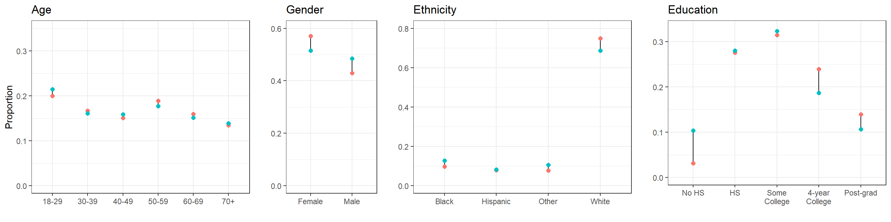
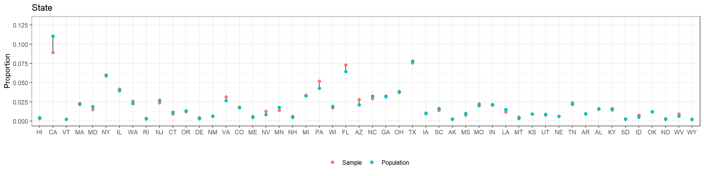
We see that our 5,000-participant CCES sample does not differ too much from the target population according to the American Community Survey. This should not be surprising, as the CCES intends to use a representative sample.
In general, we recommend checking the differences between the sample and the target population. In this case, the comparison has been based on the factors that are going to be used in MRP. However, even if some non-response bias existed for any of these factors MRP would be able to adjust for it, as we will see more in detail in subsection 4. Therefore, it may be especially important to compare the sample and target population with respect to the variables that are not going to be used in MRP – and, consequently, where we will not be able to correct any outcome measure bias due to differential non-response in these non-MRP variables.
2.2 First stage: Estimating the Individual-Response Model
The first stage is to use a multilevel logistic regression model to predict the outcome measure given the different factors we are considering. Having a plausible model to predict opinion is central for MRP to work well.
The model we use in this example is described below. It includes varying intercepts for age, ethnicity, and state, where the variation for the state intercepts is in turn influenced by the region effects (coded as indicator variables) and the Republican vote share in the 2016 election. As there are only two levels for gender, it is preferable to model it as a predictor for computational efficiency. Additionally, we include varying intercepts for the interaction between male and ethnicity, education and age, and education and ethnicity (see Ghitza and Gelman (2013) for an in-depth discussion on the advantages of including interactions).
\[ Pr(y_i = 1) = logit^{-1}( \alpha_{\rm s[i]}^{\rm state} + \alpha_{\rm a[i]}^{\rm age} + \alpha_{\rm r[i]}^{\rm eth} + \alpha_{\rm e[i]}^{\rm educ} + \beta^{\rm male} \cdot {\rm Male}_{\rm i} + \alpha_{\rm g[i], r[i]}^{\rm male.eth} + \alpha_{\rm e[i], a[i]}^{\rm educ.age} + \alpha_{\rm e[i], r[i]}^{\rm educ.eth} ) \] where:
\[ \begin{align*} \alpha_{\rm s}^{\rm state} &\sim {\rm Normal}(\gamma^0 + \gamma^{\rm south} \cdot {\rm South}_{\rm s} + \gamma^{\rm northcentral} \cdot {\rm NorthCentral}_{\rm s} + \gamma^{\rm west} \cdot {\rm West}_{\rm s} + \gamma^{\rm repvote} \cdot {\rm RepVote}_{\rm s}, \sigma^{\rm state}) \textrm{ for s = 1,...,50}\\ \alpha_{\rm a}^{\rm age} & \sim {\rm Normal}(0,\sigma^{\rm age}) \textrm{ for a = 1,...,6}\\ \alpha_{\rm r}^{\rm eth} & \sim {\rm Normal}(0,\sigma^{\rm eth}) \textrm{ for r = 1,...,4}\\ \alpha_{\rm e}^{\rm educ} & \sim {\rm Normal}(0,\sigma^{\rm educ}) \textrm{ for e = 1,...,5}\\ \alpha_{\rm g,r}^{\rm male.eth} & \sim {\rm Normal}(0,\sigma^{\rm male.eth}) \textrm{ for g = 1,2 and r = 1,...,4}\\ \alpha_{\rm e,a}^{\rm educ.age} & \sim {\rm Normal}(0,\sigma^{\rm educ.age}) \textrm{ for e = 1,...,5 and a = 1,...,6}\\ \alpha_{\rm e,r}^{\rm educ.eth} & \sim {\rm Normal}(0,\sigma^{\rm educ.eth}) \textrm{ for e = 1,...,5 and r = 1,...,4}\\ \end{align*} \]
The rstanarm package allows the user to conduct complicated regression analyses in Stan with the simplicity of standard formula notation in R. stan_glmer(), the function that allows to fit generalized linear multilevel models, uses the same notation as the lme4 package (see documentation here). That is, we specify the varying intercepts as (1 | group) and the interactions are expressed as (1 | group1:group2), where the : operator creates a new grouping factor that consists of the combined levels of the two groups (i.e. this is the same as pasting together the levels of both factors). However, this syntax only accepts predictors at the individual level, and thus the two state-level predictors must be expanded to the individual level (see [p. 265-266]Gelman and Hill (2007)). Notice that:
\[ \begin{align*} \alpha_{\rm s}^{\rm state} &\sim {\rm Normal}(\gamma^0 + \gamma^{\rm south} \cdot {\rm South}_{\rm s} + \gamma^{\rm northcentral} \cdot {\rm NorthCentral}_{\rm s} + \gamma^{\rm west} \cdot {\rm West}_{\rm s} + \gamma^{\rm repvote} \cdot {\rm RepVote}_{\rm s}, \sigma^{\rm state}) \\ &= \underbrace{\gamma^0}_\text{Intercept} + \underbrace{{\rm Normal}(0, \sigma^{\rm state})}_\text{State varying intercept} + \underbrace{\gamma^{\rm south} \cdot {\rm South}_{\rm s} + \gamma^{\rm northcentral} \cdot {\rm NorthCentral}_{\rm s} + \gamma^{\rm west} \cdot {\rm West}_{\rm s} + \gamma^{\rm repvote} \cdot {\rm RepVote}_{\rm s}}_\text{State-level predictors expanded to the individual level} \end{align*} \]
Consequently, we can then reexpress the model as:
\[ Pr(y_i = 1) = logit^{-1}( \gamma^0 + \alpha_{\rm s[i]}^{\rm state} + \alpha_{\rm a[i]}^{\rm age} + \alpha_{\rm r[i]}^{\rm eth} + \alpha_{\rm e[i]}^{\rm educ} + \beta^{\rm male} \cdot {\rm Male}_{\rm i} + \alpha_{\rm g[i], r[i]}^{\rm male.eth} + \alpha_{\rm e[i], a[i]}^{\rm educ.age} + \alpha_{\rm e[i], r[i]}^{\rm educ.eth} + \gamma^{\rm south} \cdot {\rm South}_{\rm s} \\ + \gamma^{\rm northcentral} \cdot {\rm NorthCentral}_{\rm s} + \gamma^{\rm west} \cdot {\rm West}_{\rm s} + \gamma^{\rm repvote} \cdot {\rm RepVote}_{\rm s}) \]
In the previous version of the model, \(\alpha_{\rm s[i]}^{\rm state}\) was informed by several state-level predictors. This reparametrization expands the state-level predictors at the individual level, and thus \(\alpha_{\rm s[i]}^{\rm state}\) now represents the variance introduced by the state adjusting for the region and 2016 Republican vote share. Similarly, \(\gamma^0\), which previously represented the state-level intercept, now becomes the individual-level intercept. The two parameterizations of the multilevel model are mathematically equivalent, and using one or the other is simply a matter of preference. The former one highlights the role that state-level predictos have in accounting for structured differences among the states, while the later is closer to the rstanarm syntax.
# Expand state-level predictors to the individual level
# df <- left_join(df, statelevel_predictors, by = "state", keep = TRUE)
#
# Fit in stan_glmer
# fit <- stan_glmer(abortion ~ (1 | state) + (1 | eth) + (1 | educ) + male +
# (1 | male:eth) + (1 | educ:age) + (1 | educ:eth) +
# repvote + factor(region),
# family = binomial(link = "logit"),
# data = df,
# prior = normal(0, 1, autoscale = TRUE),
# prior_covariance = decov(scale = 0.50),
# adapt_delta = 0.99,
# refresh = 0,
# seed = 1010)
#
# saveRDS(fit, file = "fit_mrp_1.rds")
fit <- readRDS("fit_mrp_1.rds")As a first pass to check whether the model is performing well, we must check that there are no warnings about divergences, failure to converge or tree depth. Fitting the model with the default settings produced a few divergent transitions, and thus we decided to try increasing adapt_delta to 0.99 and introducing stronger priors than the rstanarm defaults. After doing this, the divergences dissapeared. In the Computational Issues subsection of this case study we provide more details about divergent transitions and potential solutions.
## stan_glmer
## family: binomial [logit]
## formula: abortion ~ (1 | state) + (1 | eth) + (1 | educ) + male + (1 |
## male:eth) + (1 | educ:age) + (1 | educ:eth) + repvote + factor(region)
## observations: 5000
## ------
## Median MAD_SD
## (Intercept) -1.2 0.4
## male 0.4 0.1
## repvote 1.6 0.5
## factor(region)Northeast -0.1 0.2
## factor(region)South 0.2 0.1
## factor(region)West -0.1 0.1
##
## Error terms:
## Groups Name Std.Dev.
## state (Intercept) 0.202
## educ:age (Intercept) 0.200
## educ:eth (Intercept) 0.083
## male:eth (Intercept) 0.229
## educ (Intercept) 0.216
## eth (Intercept) 0.386
## Num. levels: state 50, educ:age 30, educ:eth 20, male:eth 8, educ 5, eth 4
##
## ------
## * For help interpreting the printed output see ?print.stanreg
## * For info on the priors used see ?prior_summary.stanreg2.3 Second Stage: Poststratification
2.3.1 Estimation at the national level
Currently, all we have achieved is a model that predicts support on the option for declining abortion coverage given a number of factor-type predictors. To go from this model to a national or sub-national estimate, we need to weight the model predictions for the different subgroups by the actual frequency of these subgroups. This idea can be expressed as:
\[ \theta^{MRP} = \frac{\sum N_{\rm subgroup} \theta_{\rm subgroup}}{\sum N_{\rm subgroup}} \]
where \(\theta^{MRP}\) is the MRP estimate, \(\theta_{\rm subgroup}\) corresponds to the model estimate for a specific subgroup (e.g. young Hispanic men with a High School diploma in Arkansas), and \(N_{\rm subgroup}\) corresponds to the number of people in that subgroup according to the ACS. For a more in-depth review of poststratification, see Chapter 13 of Gelman, Hill, and Vehtari (2020).
The values of \(\theta_{subgroup}\) for the different subgroups can be obtained with the posterior_epred() function. Of course, as stan_glmer() performs Bayesian inference, \(\theta_{subgroup}\) for any given subgroup will not be a single point estimate but a vector of posterior draws.
# Expand state level predictors to the individual level
postrat_df <- left_join(postrat_df, statelevel_predictors, by = "state", keep = TRUE)
# posterior_epred returns the posterior estimates for the different subgroups stored in the postrat_df
# dataframe.
P <- posterior_epred(fit, newdata = postrat_df, draws = 1000)
mrp_estimates <- P %*% postrat_df$n / sum(postrat_df$n)
model_popn_pref <- c(mean = mean(mrp_estimates), sd = sd(mrp_estimates))
print(round(model_popn_pref, 2))## mean sd
## 0.43 0.01We can compare these results to the 5,000-person unadjusted sample estimate:
sample_popn_pref <- c(mean = mean(df$abortion), se = sqrt(mean(df$abortion)*(1-mean(df$abortion))/nrow(df)))
print(round(sample_popn_pref, 2))## mean se
## 0.43 0.01Additionally, we can compare with the population support estimated by the full survey that included the almost 60,000 participants:
all_popn_pref <- c(mean = mean(df_all$abortion), se = sqrt(mean(df_all$abortion)*(1-mean(df_all$abortion))/nrow(df_all)))
round(all_popn_pref, 2)## mean se
## 0.43 0.00In general, we see that both the unadjusted sample estimate and the MRP estimate are quite close to the results of the full survey. In other words, MRP is not providing a notable advantage against the unadjusted sample national estimates. However, it is important to clarify that we were somewhat lucky in obtaining this result as a product of using data from the CCES, a high quality survey that intends to be representative (and appears to be, at least with respect to the variables considered in our poststratification table). Many real-world surveys are not as representative relative to the variables considered in the poststratification step, and in these cases MRP will help correcting the biased estimates from the unadjusted survey. We will see an example of this in section 4, where we exemplify how MRP adjusts a clearly biased sample.
2.3.2 Estimation for sub-national units
As we mentioned, small area estimation is one of the main applications of MRP. In this case, we will get an estimate of the support for employer’s right to decline coverage of abortions per state:
\[ y_{\rm state}^{MRP} = \frac{\sum_{\rm subgroup \in state} N_{\rm subgroup} \theta_{\rm subgroup}}{\sum_{\rm subgroup \in state} N_{\rm subgroup}} \]
# Create empty dataframe
state_df <- data.frame(
state_num = list_states_num,
state = list_states_abb,
model_state_pref = rep(NA, length(list_states_num)),
model_state_sd = rep(NA, length(list_states_num)),
sample_state_pref = rep(NA, length(list_states_num)),
all_state_pref = rep(NA, length(list_states_num)),
N = rep(NA, length(list_states_num)),
N_all = rep(NA, length(list_states_num))
)
state_estimates_all$statename <- list_states_abb
# Loop to populate the dataframe
for(i in 1:length(levels(postrat_df$state))) {
# Currently, the matrix P and the poststratification table contain 12,000
# rows. We need to filter the ones that correspond to state i for each
# iteration of the loop. We do so defining the following condition:
filtering_condition <- which(postrat_df$state == state_df$state[i])
# Filtering matrix P with filtering_condition
P_filtered <- P[ ,filtering_condition]
# Filtering poststratification table with filtering_condition
k_filtered <- postrat_df[filtering_condition, ]$n
# Poststratification step
poststrat_prob_state <- P_filtered %*% k_filtered / sum(k_filtered)
# This is the MRP estimate for the state
state_df$model_state_pref[i] <- mean(poststrat_prob_state)
state_df$model_state_sd[i] <- sd(poststrat_prob_state)
# This is the 5,000 sample survey estimate for the state, this time filtering df
state_df$sample_state_pref[i] <- mean(df$abortion[df$state == list_states_abb[i]])
# This is the 60000-person survey estimate for the state
state_df$all_state_pref[i] <- state_estimates_all$estimate[state_estimates_all$statename == list_states_abb[i]]
# Sample size in state i for the 5,000 sample survey
state_df$N[i] <- nrow(df[df$state == list_states_abb[i], ])
# Sample size in state i for the full 60,000 survey
state_df$N_all[i] <- state_n_all$N_all[state_n_all$state==list_states_abb[i]]
}
state_df$state <- fct_reorder(state_df$state, states_order)We start visualizing the estimates by state from the unadjusted 5,000-person sample. Again, the states are ordered by Republican vote in the 2016 election, and therefore we expect that statement support will follow an increasing trend.
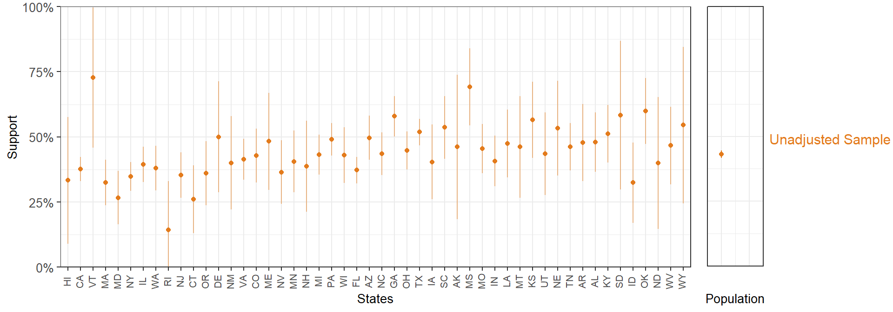
In states with small samples, we see considerably wide 95% confidence intervals. We can add the MRP-adjusted estimates to this plot.
In general, MRP produces less extreme values by partially pooling information across the factor levels. To illustrate this, we can compare the sample and MRP estimates with the results form the full 60,000-respondent CCES. Of course, in any applied situation we would be using the full survey, but as we took a 5,000 person sample the full 60,000-respondent survey serves as a reference point.
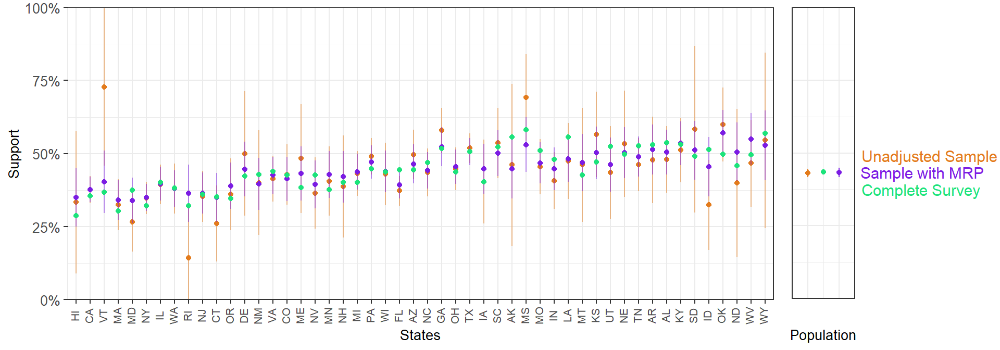
Overall, the MRP estimates are closer to the full survey estimates. This is particularly clear for the states with a smaller sample size.
As a final way of presenting the MRP estimates, we can plot them on a US map. The symmetric color range goes from 10% to 90% support, as this scale allows for comparison with the other maps. However, the MRP estimates for statement support are concentrated in a relatively small range, which makes the colors appear muted.
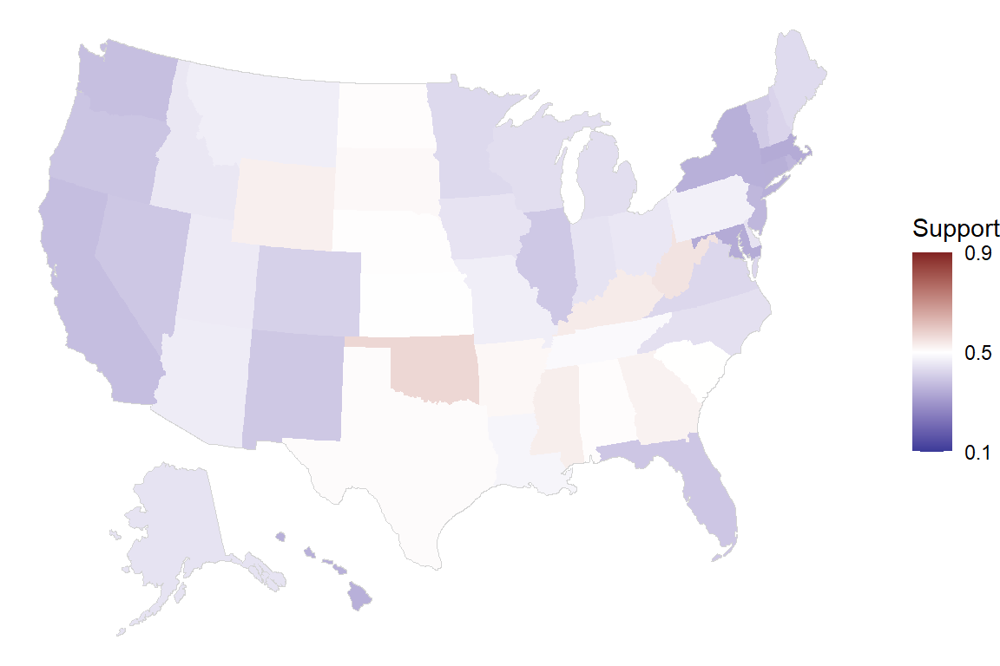
2.3.3 Estimation for subgroups within sub-national units
MRP can also be used to obtain estimates for more complex cases, such as subgroups within states. For instance, we can study support for declining coverage of abortions by state and ethnicity within state. For clarity, we order the races according to their support for the statement.
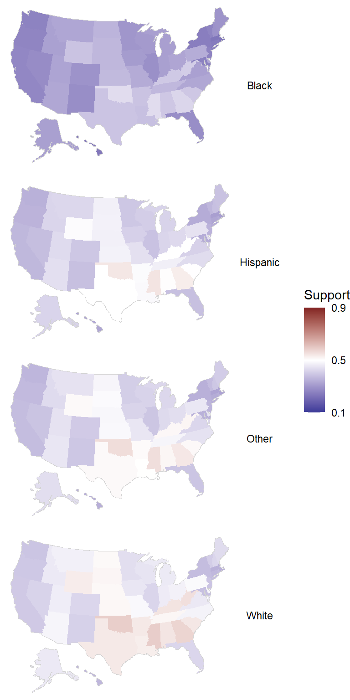
Similarly, we can look at the outcome in ethnicity-education subgroups by state.
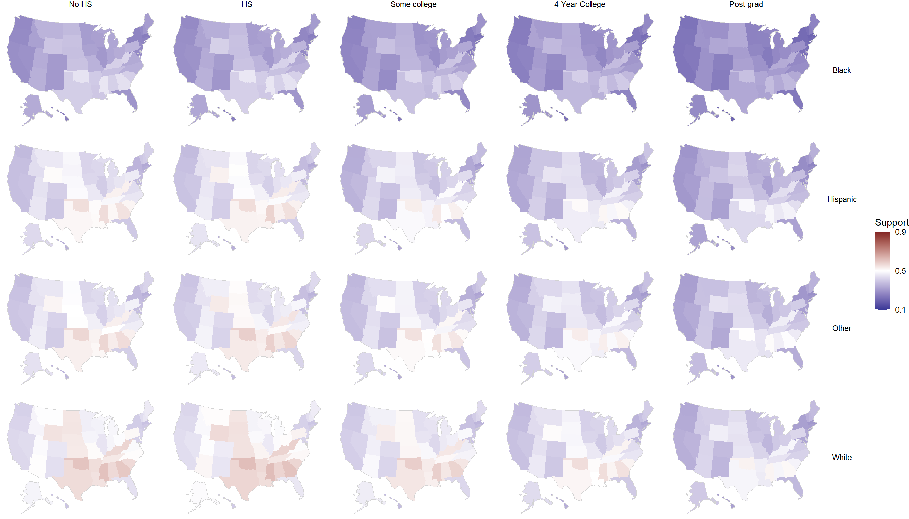
2.4 Adjusting for Nonrepresentative Surveys
We have already introduced that MRP is an effective statistical adjustment method to correct for differences between the sample and target population for a set of key variables. We start this second example by obtaining an artificially nonrepresentative sample that gives more weight to respondents that are older, male, and from Republican states.
set.seed(1010)
# We add the state-level predictors to df_all
df_all <- left_join(df_all, statelevel_predictors, by = "state", keep = TRUE)
# We take a sample from df_all giving extra weight to respondents that re older, male, and from Republican states.
df <- df_all %>% sample_n(5000, weight = I(5*repvote + (age=="18-29")*0.5 + (age=="30-39")*1 +
(age=="40-49")*2 + (age=="50-59")*4 +
(age=="60-69")*6 + (age=="70+")*8 + (male==1)*20 +
(eth=="White")*1.05))
df$state <- factor(df$state, levels = list_states_abb, labels = list_states_abb)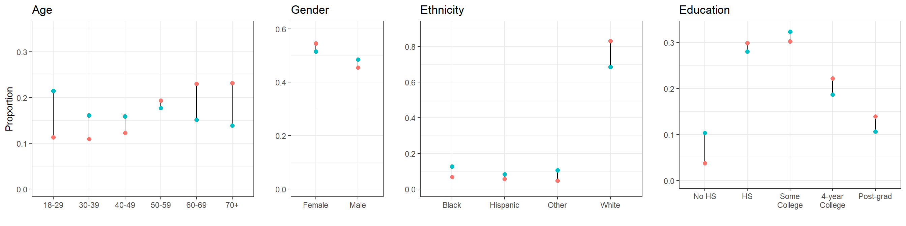
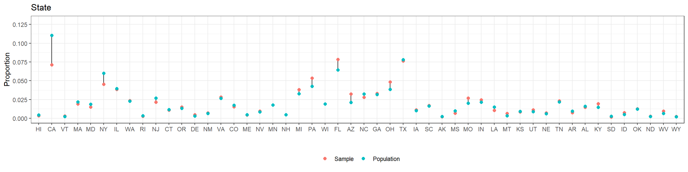
As expected, our remarkably nonrepresentative sample produces estimates that are lower than what we obtained by using a random sample in the previous section.
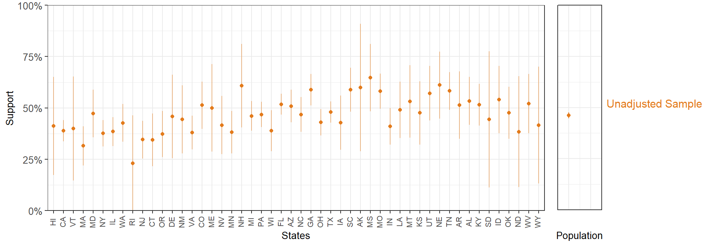
MRP seems to partially correct for the nonrepresentative sample:
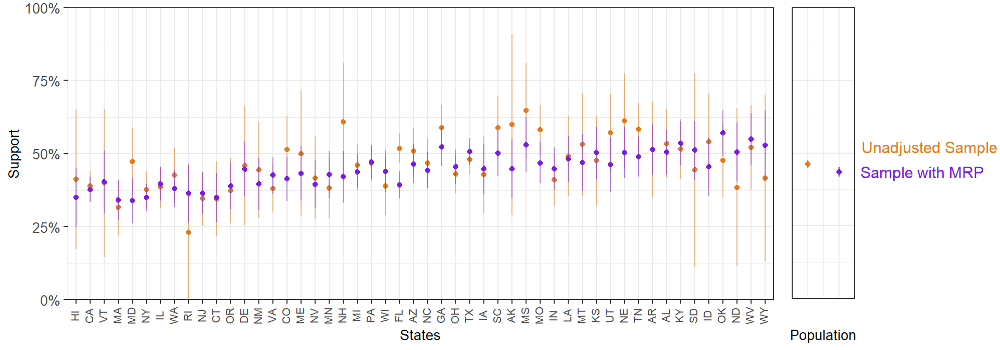
Lastly, we see how the MRP national and sub-national estimates based on the nonrepresentative sample are, overall, much closer to the 60,000-person survey than the biased unadjusted sample estimates.
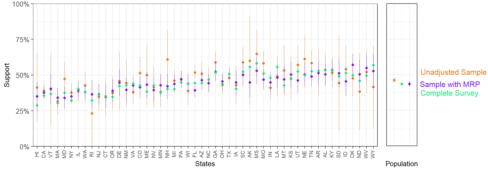
2.5 Practical Considerations
2.5.1 Census incompletness and uncertainty
There are two main problems we can encounter when dealing with census data.
It is possible that some variables that we may want to use for poststratification are not available. For instance, party ID is not registered in the US census and ethnicity is not registered in the French census. This additional information can be included in the poststratification table based on other (generally smaller) surveys that contain these variables.
A great number of demogaphic-geographic combinations can require a large poststratification table, which in turn can result in unreliable census estimates. The American Community Survey we use in this case study does not only provide estimates of the actual figures that would have been obtained if the entire population was sampled, it also includes a measure of uncertainty around these estimates. Ideally, this uncertainty should be taken into account in the poststratification. For simplicity, this introduction has skipped this step, but this could mean the MRP-based estimates present an underestimated uncertainty.
2.5.2 Nonreponse and missing data
We have seen that MRP is a method that can mitigate potential biases in the sample, but it is not a substitute for a better data collection effort that tries to minimize systematic nonresponse patterns.
2.5.3 Model complexity
MRP depends upon the use of a regularized model (i.e. that prevents overfitting by limiting its complexity). Different approaches can be used for this goal (e.g. non-multilevel regression, random forests, or a neural network; see Bisbee (2019) for an implementation that uses Bayesian Additive Regression Trees), but there are several advantages of using a Bayesian multilevel model. First, the multilevel structure allows for partially pooling information across different levels of a factor, which can be crucial when dealing with certain levels with few samples. Second, the Bayesian approach propagates uncertainty across the modeling, and thus gives more realistic confidence intervals.
Apart from selecting the factors included in the poststratification table, there are several decisions the modeler should make. As we have already mentioned, adding relevant state-level predictors to the model often improves results, particularly when we have few data about some states. The inclusion of interactions can also be benefitial, especially when studying subgroups within subgroups (e.g. demographic subgroups within states; Ghitza and Gelman (2013)). Lastly, the use of structured priors can also serve to reduce both bias and variance by sharing information across the levels of a factor (Gao et al. (2020)).
2.5.4 Empty cells in the poststratification table
It is very frequent that some of the cells in the poststratification table are empty, meaning that there are not anyone that fulfills some specific combination of factors. For instance, in a given poststratification table we might find that there can be no people younger than 20, without a high school degree, and earning more than $500,000 a year in a particularly small state. In our example, we made sure that all the cells in the poststratification table were present even if the weight of that cell was zero, but this was only for illustrative purposes.
2.5.5 Subnational units not represented in the survey
It is fairly common for small-sample surveys not to include anyone from a particular subnational unit. For instance, a small national survey in the US may not include any participant from Wyoming. An important advantage of MRP is that we can still produce estimates for this state using the information from the participants in other states. Going back to the first parametrization of the multilevel model that we presented, \(\alpha^{\rm state}_{\rm s = Wyoming}\) will be calculated based on the region and Republican voteshare of the 2016 – even in the abscence of information about the effect of residing in Wyoming specifically. As we have already explained, including subnational-level predictors is always recommended, particularly considering that data at the subnational level is easy to obtain in many cases. However, when dealing with subnational units that are not represented in our survey these predictors become even more central, as they are able to capture structured differences among the states and therefore allow for more precise estimation in the missing subnational areas.
2.5.6 Computational issues
Stan uses Hamiltonian Monte Carlo to explore the posterior distribution. In some cases, the geometry of the posterior distribution is too complex, making the Hamiltonian Monte Carlo “diverge”. This produces a warning indicating the presence of divergent transitions after warmup, something that implies the model could present biased estimates (see Betancourt (2017) for more details). Usually, a few divergent transitions do not indicate a serious problem. There are, in any case, three potential solutions to this problem that do not involve reformulating the model: (i) a non-centered parametization; (ii) increasing the adapt_delta parameter; and (iii) including stronger priors. Fortunately we don’t have to worry about (i), as rstanarm already provides a non-centered parametization for the model. Therefore, we can focus on the other two.
Exploring the posterior distribution is somewhat similar as cartographing a mountainous terrain, and a divergent transition is similar to falling down a very steep slope, with the consequence of not being able to correctly map that area. In this analogy, what the cartographer could do is moving through the steep slope giving smaller steps to avoid falling. In Stan, the step size is set up automatically, but we can change a parameter called
adapt_deltathat controls the step size. By default we have thatadapt_delta = .95, but we can increase that number to make Stan take smaller steps, which should reduce the number of divergent transitions. The maximum value we can set foradapt_deltais close (but necessarely less than) 1, with the downside that an increase implies a somewhat slower exploration of the posterior distribution. Usually, anadapt_delta = 0.99works well if we only have a few divergent transitions.However, there are cases in which increasing
adapt_deltais not sufficient, and divergent transitions still occur. In this case, introducing weakly informative priors can be extremelly helpful. Althoughrstanarmprovides by default weakly informative priors, in most applications these tend to be too weak. By using more reasonable priors, we make the posterior distribution easier to explore.- The priors for the scaled coefficients are \({\rm Normal}(0, 2.5)\). When the coefficients are not scaled,
rstanarmwill automatically adjust the scaling of the priors as detailed in the prior vignette. In most cases, and particularly when we find computational issues, it is reasonable to give stronger priors on the scaled coefficients such as \({\rm Normal}(0, 1)\). - Multilevel models with multiple group-level standard deviation parameters (e.g. \(\sigma^{\rm age}\), \(\sigma^{\rm eth}\), \(\sigma^{\rm educ.eth}\), etc.) tend to be hard to estimate and sometimes present serious computational issues. The default prior for the covariance matrix is
decov(reg. = 1, conc. = 1, shape = 1, scale = 1). However, in a varying-intercept model such as this one (i.e. with structure(1 | a) + (1 | b) + ... + (1 | n)) the group-level standard deviations are independent of each other, and therefore the prior is simply a gamma distribution with some shape and scale. Consequently,decov(shape = 1, scale = 1)implies a weakly informative prior \({\rm Gamma(shape = 1, scale = 1)} = {\rm Exponential(scale = 1)}\) on each group-level standard deviation. This is too weak in most situations, and using something like \({\rm Exponential(scale = 0.5)}\) can be crucial for stabilizing computation.
- The priors for the scaled coefficients are \({\rm Normal}(0, 2.5)\). When the coefficients are not scaled,
Therefore, something like this has much fewer chances of running into computational issues than simply leaving the defaults:
fit <- stan_glmer(abortion ~ (1 | state) + (1 | eth) + (1 | educ) + (1 | age) + male +
(1 | male:eth) + (1 | educ:age) + (1 | educ:eth) +
repvote + factor(region),
family = binomial(link = "logit"),
data = df,
prior = normal(0, 1, autoscale = TRUE),
prior_covariance = decov(scale = 0.50),
adapt_delta = 0.99,
refresh = 0,
seed = 1010)More details about divergent transitions can be found in the Brief Guide to Stan’s Warnings and in the Stan Reference Manual. More information and references about priors can be found in the Prior Choice Recommendations Wiki.
2.6 Appendix: Data Preprocessing for CCES and Census Data
2.6.1 CCES
The code below shows in more detail how the processing of the CCES was done. Notice that age, a continous variable, is split into different levels, and that the levels of some factors are modified in order to match the ACS data.
clean_cces <- function(df, list_states_abb, list_states_num){
## Abortion -- dichotomous (0 - Oppose / 1 - Support)
df$abortion <- abs(df$CC18_321a-2)
## State -- factor
df$state <- df$inputstate
df$state <- factor(df$state, levels = list_states_num, labels = list_states_abb)
## Gender -- dichotomous coded as -0.5 Female and +0.5 Male, as this allows for an intercept that represents a
## 'midway' point between the two groups.
df$male <- abs(df$gender-2)
## Ethnicity -- factor
df$eth <- factor(df$eth,
levels = 1:8,
labels = c("White", "Black", "Hispanic", "Asian", "Native American", "Mixed", "Other", "Middle Eastern"))
df$eth <- fct_collapse(df$eth, "Other" = c("Asian", "Other", "Middle Eastern", "Mixed", "Native American"))
## Age -- cut into factor
df$age <- 2018 - df$birthyr
df$age <- cut(as.integer(df$age), breaks = c(0, 29, 39, 49, 59, 69, 120),
labels = c("18-29","30-39","40-49","50-59","60-69","70+"),
ordered_result = TRUE)
## Education -- factor
df$educ <- factor(as.integer(df$educ),
levels = 1:6,
labels = c("No HS", "HS", "Some college", "Associates", "4-Year College", "Post-grad"), ordered = TRUE)
df$educ <- fct_collapse(df$educ, "Some college" = c("Some college", "Associates"))
# Clean and remove NAs
df <- df %>% select(abortion, state, eth, male, age, educ) %>% drop_na()
}2.6.2 American Community Survey
We start downloading the Public Use Microdata Sample from the American Community Survey data repository. The repository contains two .zip files corresponding to each state: one for individual-level variables and other for household-level variables. All the variables considered in our analysis are available in the individual-level files, but we will also download and process the household-level variable income to show how this could be done.
dir.create("postrat_data/")
system('wget -O postrat_data -e robots=off -nd -A "csv_*.zip" -R "index.html","csv_hus.zip","csv_pus.zip" https://www2.census.gov/programs-surveys/acs/data/pums/2018/5-Year/')Once we have the dataset, there are two main considerations:
Focus on the population of interest: We must take into account that the population of interest for the CCES survey, which only considers US citizens above 18 years of age, is different from the population reflected in the ACS. Therefore, we had to remove the cases of underages and non-US citizens in the ACS.
Match the levels of the two datasets: The levels of the variables in the poststratification table must match the levels of the variables in the CCES dataset. In this case, this required preprocessing the variables of the CCES and ACS in a way that the levels were compatible.
list_states_abb <- datasets::state.abb
list_states_num <- rep(NA, length(list_states_abb))
list_of_postrat_df <- list()
for(i in 1:length(list_states_num)){
# Unzip and read household and person files for state i
p_name <- paste0("postrat_data/csv_p", tolower(list_states_abb[i]),".zip")
h_name <- paste0("postrat_data/csv_h", tolower(list_states_abb[i]),".zip")
p_csv_name <- grep('\\.csv$', unzip(p_name, list=TRUE)$Name, ignore.case=TRUE, value=TRUE)
temp_df_p_state <- fread(unzip(p_name, files = p_csv_name),
header=TRUE, select=c("SERIALNO","ST","CIT","PWGTP","RAC1P","HISP","SEX","AGEP", "SCHL"))
h_csv_name <- grep('\\.csv$', unzip(h_name, list=TRUE)$Name, ignore.case=TRUE, value=TRUE)
temp_df_h_state <- fread(unzip(h_name, files = h_csv_name),
header=TRUE, select=c("SERIALNO","FINCP"))
# Merge the individual and household level variables according to the serial number
temp_df <- merge(temp_df_h_state, temp_df_p_state, by = "SERIALNO")
# Update list of state numbers that will be used later
list_states_num[i] <- temp_df$ST[1]
## Filter by citizenship
temp_df <- temp_df %>% filter(CIT!=5)
## State
temp_df$state <- temp_df$ST
## Gender
temp_df$male <- abs(temp_df$SEX-2)-0.5
## ethnicity
temp_df$RAC1P <- factor(temp_df$RAC1P,
levels = 1:9,
labels = c("White", "Black", "Native Indian", "Native Alaskan",
"Native Indian or Alaskan", "Asian", "Pacific Islander", "Other",
"Mixed"))
temp_df$eth <- fct_collapse(temp_df$RAC1P, "Native American" = c("Native Indian", "Native Alaskan",
"Native Indian or Alaskan"))
temp_df$eth <- fct_collapse(temp_df$eth, "Other" = c("Asian", "Pacific Islander", "Other",
"Native American", "Mixed"))
levels(temp_df$eth) <- c(levels(temp_df$eth), "Hispanic")
temp_df$eth[(temp_df$HISP!=1) & temp_df$eth=="White"] <- "Hispanic"
## Age
temp_df$age <- cut(as.integer(temp_df$AGEP), breaks = c(0, 17, 29, 39, 49, 59, 69, 120),
labels = c("0-17", "18-29","30-39","40-49","50-59","60-69","70+"),
ordered_result = TRUE)
## Filter out underages
temp_df <- filter(temp_df, age!="0-17")
temp_df$age <- droplevels(temp_df$age)
## Income (not currently used)
temp_df$income <- cut(as.integer(temp_df$FINCP),
breaks = c(-Inf, 9999, 19999, 29999, 39999, 49999, 59999, 69999, 79999, 99999,
119999, 149999, 199999, 249999, 349999, 499999, Inf),
ordered_result = TRUE, labels = c("<$10,000", "$10,000 - $19,999", "$20,000 - $29,999",
"$30,000 - $39,999", "$40,000 - $49,999",
"$50,000 - $59,999", "$60,000 - $69,999",
"$70,000 - $79,999","$80,000 - $99,999",
"$100,000 - $119,999", "$120,000 - $149,999",
"$150,000 - $199,999","$200,000 - $249,999",
"$250,000 - $349,999", "$350,000 - $499,999",
">$500,000"))
temp_df$income <- fct_explicit_na(temp_df$income, "Prefer Not to Say")
## Education
temp_df$educ <- cut(as.integer(temp_df$SCHL), breaks = c(0, 15, 17, 19, 20, 21, 24), ordered_result = TRUE,
labels = c("No HS", "HS", "Some college", "Associates", "4-Year College", "Post-grad"))
temp_df$educ <- fct_collapse(temp_df$educ, "Some college" = c("Some college", "Associates"))
# Calculate the poststratification table
temp_df <- temp_df %>% drop_na(state, eth, male, age, educ, PWGTP) %>%
select(state, eth, male, age, educ, PWGTP)
## Trick to 'expand' the poststratification table so groupby produces all the rows, even the ones with N = 0
temp_df_expanded <- temp_df %>%
expand(state, eth, male, age, educ) %>%
mutate(PWGTP = 0)
temp_df <- rbind(temp_df, temp_df_expanded)
## We sum by the inidividual-level weight PWGTP
list_of_postrat_df[[i]] <- temp_df %>%
group_by(state, eth, male, age, educ, .drop = FALSE) %>%
summarise(n = sum(as.numeric(PWGTP)))
print(paste0(list_states_abb[i], " completed"))
}
postrat_df <- rbindlist(list_of_postrat_df)
write.csv(postrat_df, "postrat_data.csv")References
Betancourt, Michael. 2017. “A Conceptual Introduction to Hamiltonian Monte Carlo.” arXiv Preprint arXiv:1701.02434.
Bisbee, James. 2019. “BARP: Improving Mister P Using Bayesian Additive Regression Trees.” American Political Science Review 113 (4): 1060–5.
Buttice, Matthew K, and Benjamin Highton. 2013. “How Does Multilevel Regression and Poststratification Perform with Conventional National Surveys?” Political Analysis 21 (4).
Downes, Marnie, Lyle C Gurrin, Dallas R English, Jane Pirkis, Dianne Currier, Matthew J Spittal, and John B Carlin. 2018. “Multilevel Regression and Poststratification: A Modeling Approach to Estimating Population Quantities from Highly Selected Survey Samples.” American Journal of Epidemiology 187 (8): 1780–90.
Gao, Yuxiang, Lauren Kennedy, Daniel Simpson, Andrew Gelman, and others. 2020. “Improving Multilevel Regression and Poststratification with Structured Priors.” Bayesian Analysis.
Gelman, Andrew, and Jennifer Hill. 2007. Data Analysis Using Regression and Multilevelhierarchical Models. Vol. 1. Cambridge University Press New York, NY, USA.
Gelman, Andrew, Jennifer Hill, and Aki Vehtari. 2020. Regression and Other Stories. Cambridge University Press.
Ghitza, Yair, and Andrew Gelman. 2013. “Deep Interactions with Mrp: Election Turnout and Voting Patterns Among Small Electoral Subgroups.” American Journal of Political Science 57 (3): 762–76.
Kiewiet de Jonge, Chad P, Gary Langer, and Sofi Sinozich. 2018. “Predicting State Presidential Election Results Using National Tracking Polls and Multilevel Regression with Poststratification (Mrp).” Public Opinion Quarterly 82 (3): 419–46.
Lax, Jeffrey R, and Justin H Phillips. 2009a. “Gay Rights in the States: Public Opinion and Policy Responsiveness.” American Political Science Review 103 (3): 367–86.
Lax, Jeffrey R, and Justin H Phillips. 2009b. “How Should We Estimate Public Opinion in the States?” American Journal of Political Science 53 (1): 107–21.
Park, David K, Andrew Gelman, and Joseph Bafumi. 2004. “Bayesian Multilevel Estimation with Poststratification: State-Level Estimates from National Polls.” Political Analysis 12 (4): 375–85.
Wang, Wei, David Rothschild, Sharad Goel, and Andrew Gelman. 2015. “Forecasting Elections with Non-Representative Polls.” International Journal of Forecasting 31 (3): 980–91.